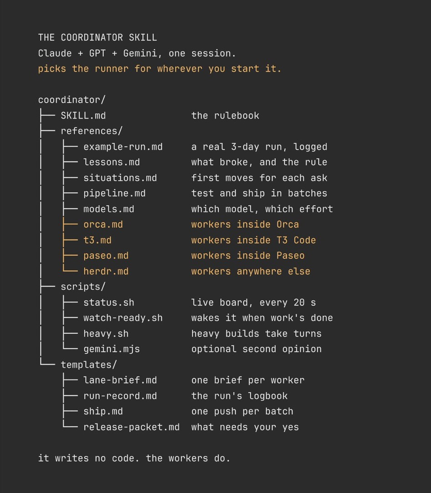
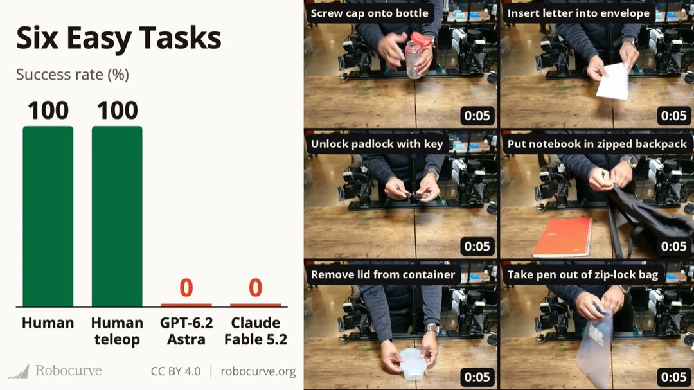
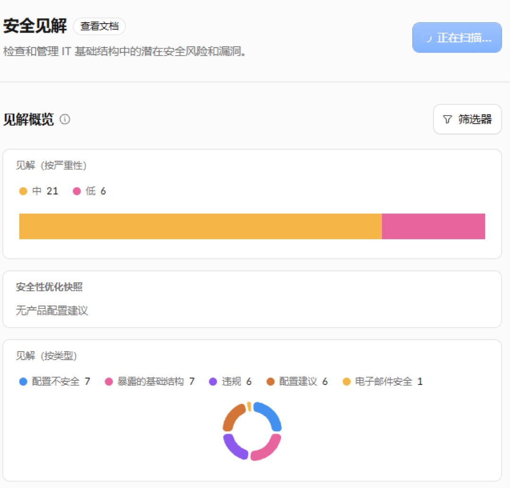
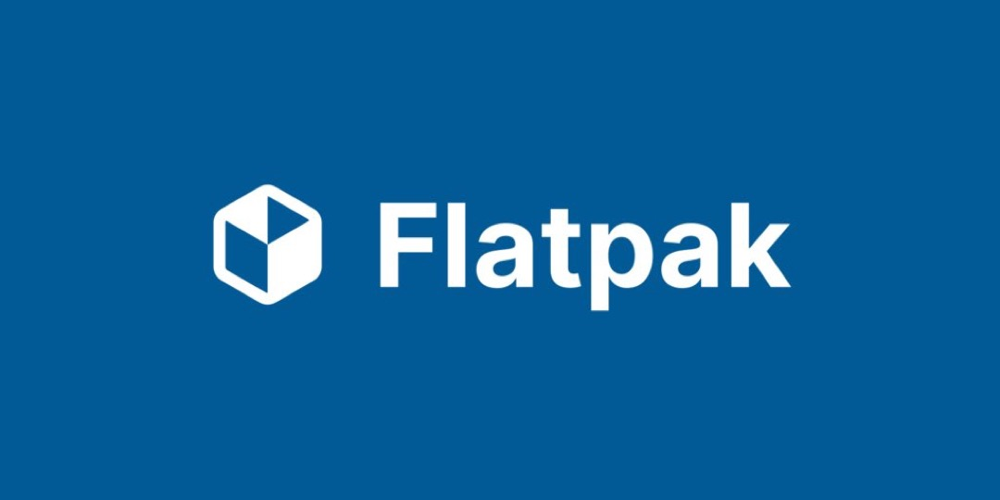
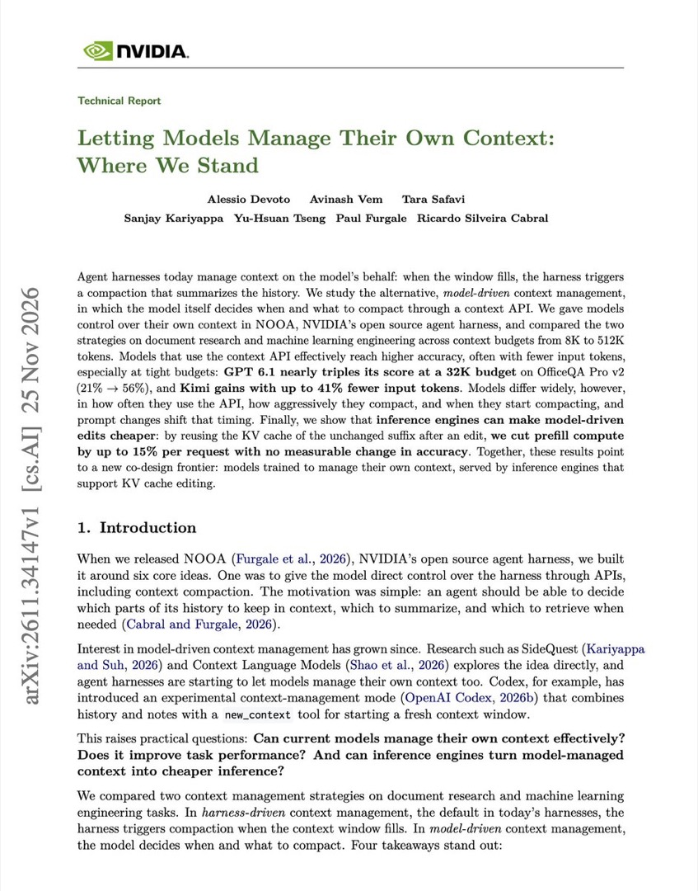
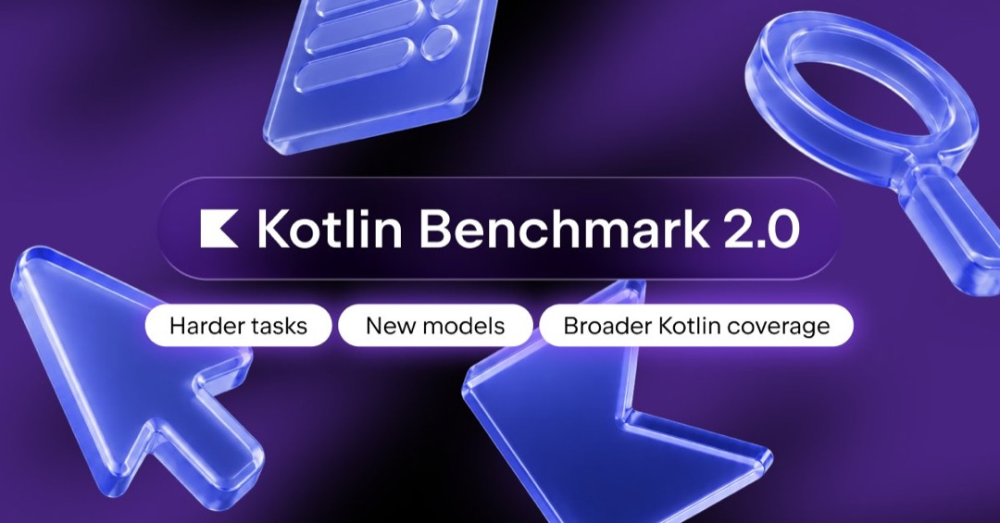
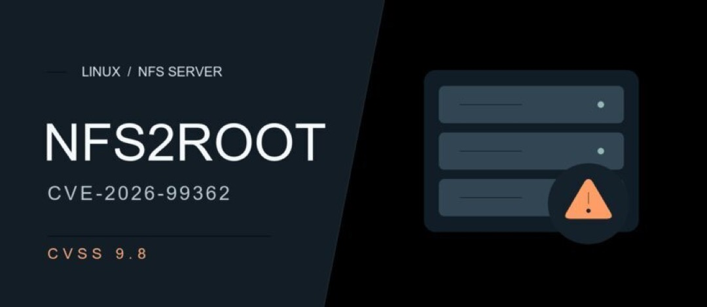
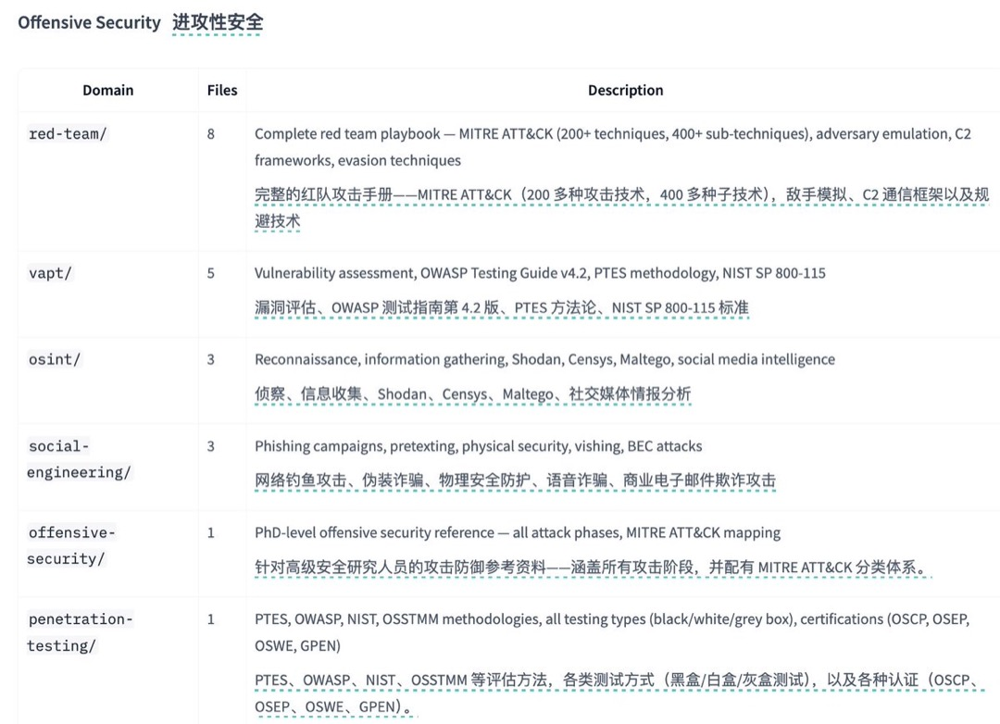
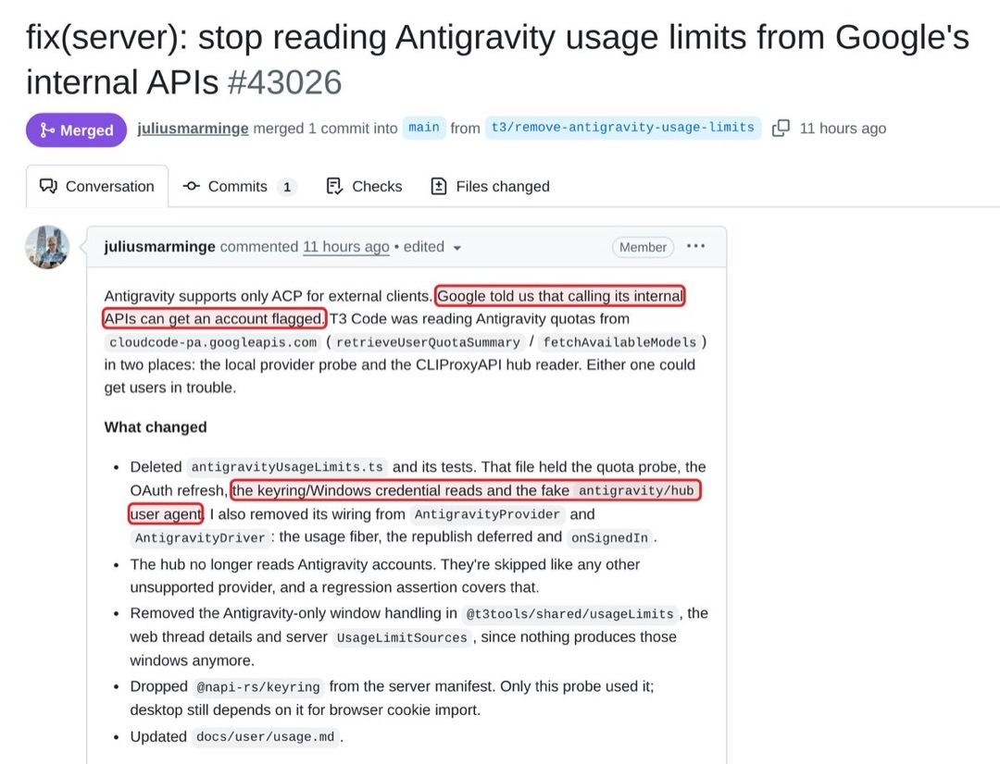
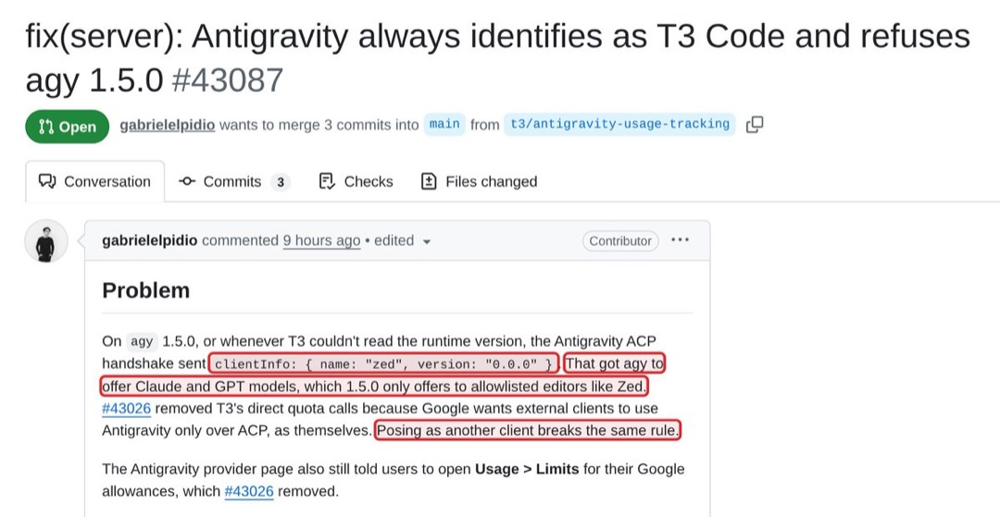

本期速览
01 Claude与Codex多模型协调技能
06 Flatpak 1.18.6 修复沙箱逃逸漏洞
07 NVIDIA让模型自管上下文提效
14 OpenSRE 自动修复 CI/CD 故障
17 Firecrawl Local 本地单文件运行
01｜Claude与Codex多模型协调技能
来源（X） · @Voxyz_ai · 2026-11-26 05:00
中文译文
在试过 Herdr、Orca、T3 Code 和 Paseo 之后，这就是我完整的 coordinator skill。
毫无保留，以下就是我如何让 Claude、GPT 和 Gemini 完美协同工作。这一切都运行在这个 coordinator skill 上，我白天用它，晚上睡觉时也用它。前端交给 Opus 5.5，后端和发布交给 Codex Sol，涉及金钱或登录的 PR 先由 Codex Astra 审查，Gemini 4 Argon/Neon 负责查看设计和文案，以决定是否需要第二意见。
它现在支持全部四个。一次安装即可覆盖全部。我已经切换到 Paseo 作为我的主力，四个中最好的：当一个子任务完成时，它会自动唤醒协调器，不用坐在那里盯着它。
完整的 skill 在 Copybook 上免费：http://copybook.page/t/coordinator-skill-for-claude-code-and-codex
安装好后，只需把这段发给 Claude Code、Codex 或 Claude 桌面应用：
“本次运行使用 coordinator skill。目标：<你的目标>。定义什么叫完成，以及证明它完成的检查。你可以合并通过审查和检查的 PR。在部署、迁移、付款或删除数据之前先问我。”
原文
After trying Herdr, Orca, T3 Code and Paseo, this is my full coordinator skill.
Holding nothing back, here's how I get Claude, GPT and Gemini to 𝘄𝗼𝗿𝗸 𝘁𝗼𝗴𝗲𝘁𝗵𝗲𝗿 𝗽𝗲𝗿𝗳𝗲𝗰𝘁𝗹𝘆. It all runs on this coordinator skill, which I use all day, and all night while I sleep. Front end goes to Opus 5.5, back end and shipping to Codex Sol, PRs that touch money or login get reviewed by Codex Astra first, and Gemini 4 Argon/Neon takes a look at design and copy to decide whether a second opinion is needed.
It now supports all four. One install covers them all. I've switched to Paseo as my main one, 𝘁𝗵𝗲 𝗯𝗲𝘀𝘁 𝗼𝗳 𝘁𝗵𝗲 𝗳𝗼𝘂𝗿: when a subtask finishes, it wakes the coordinator on its own, no sitting there watching it.
The full skill is free on Copybook: http://copybook.page/t/coordinator-skill-for-claude-code-and-codex
Once it's installed, just send this to Claude Code, Codex or the Claude desktop app:
"Use the coordinator skill for this run. Goal: <your goal>. Define what done means and the check that proves it. You can merge PRs that pass review and checks. Ask me before deploys, migrations, payments or deleting data."

02｜SET成机器人真实任务新基准
来源（X） · @agupta · 2026-11-27 00:40
中文译文
很可能是机器人领域的新标准基准
原文
Likely the new standard benchmark for robotics
引用内容
Robocurve PBC @robocurve
中文译文
我们提出 Six Easy Tasks（SET），一个真实世界的机器人基准，人类得分 100%，而前沿 AI 模型得分 0%。
下面我们解释这些智能体是如何表现的 🧵
原文
We present Six Easy Tasks (SET), a real-world robotics benchmark that humans score 100% on, while frontier AI models score 0%.
We explain how the agents do below 🧵

03｜Fable 5.2 生成山海经卡牌游戏
来源（X） · @miles_mazy · 2026-11-26 22:50
五位传人各有打法，兽、技能都对着《山海经》原文做，画面和音效全是代码生成的，打开就能玩：
https://shanhai-chuanjia.pages.dev
04｜Google Workspace CLI 支持9产品
来源（X） · @Fenng · 2026-11-26 22:45
不知道什么时候这两个产品能有 CLI。
05｜AI批量修复Cloudflare安全见解
来源（X） · @williamlong · 2026-11-26 22:38

引用内容
William Long @williamlong
06｜Flatpak 1.18.6 修复沙箱逃逸漏洞
来源（X） · @sysxplore · 2026-11-26 14:26
中文译文
🚨 一个恶意的 Flatpak 应用可能逃出沙箱，并在你的系统上植入归 root 所有的文件。
Flatpak 1.18.6 修复了两个漏洞。其中一个让恶意应用通过负责在沙箱内外传递文件的 portal 突破出去。
另一个让恶意应用、运行时或扩展仅仅通过被安装就能在宿主机上创建 setuid root 文件。
维护者 Simon McVittie：“所有更早的版本都应被视为存在漏洞。”
更新到 Flatpak 1.18.6（CVE-2026-133842、CVE-2026-133845）。Debian 13 和其他 LTS 发行版正在获得向后移植的修复。
原文
🚨 A malicious Flatpak app could escape its sandbox and plant root-owned files on your system.
Flatpak 1.18.6 fixes two holes. One let a rogue app break out through the portal that passes files in and out of the sandbox.
The other let a bad app, runtime or extension create setuid root files on the host just by being installed.
Maintainer Simon McVittie: "All older releases should be assumed to be vulnerable."
Update to Flatpak 1.18.6 (CVE-2026-133842, CVE-2026-133845). Debian 13 and other LTS distros are getting backported fixes.

07｜NVIDIA让模型自管上下文提效
来源（X） · @omarsar0 · 2026-11-26 22:36
中文译文
NVIDIA 关于智能体上下文管理的重磅论文。
（收藏它）
他们建议一种协同设计：训练模型管理自己的上下文，并构建推理引擎以大规模高效地服务它。
上下文管理是长时间运行的智能体的一项重要基础能力。如今，通常由 harness 决定何时压缩，即在窗口填满后对历史进行摘要。
NVIDIA 团队在他们的开源智能体 harness NOOA 中给模型提供了一个上下文 API，让模型决定何时压缩以及压缩什么。他们在文档研究和 ML 工程任务上，以 8K 到 512K token 的预算比较了两种方法。
在 32K 预算下，GPT 6.1 在 OfficeQA Pro v2 上从 21% 提升到 56%，当它管理自己的上下文时。Kimi 在输入 token 最多减少 41% 的情况下提高了准确率。
模型在调用 API 的频率和压缩的早晚方面差异很大，而提示词的微小改动就会改变这个时机。
推理引擎也可以让这些编辑更便宜。在编辑后复用未变更后缀的 KV 缓存，使每个请求的 prefill 计算最多减少 15%，且准确率没有可测量的变化。
https://arxiv.org/abs/2611.34147
Chat with Paper: https://academy.dair.ai/papers/letting-models-manage-their-own-context-where-we-stand-2611.34147
原文
Banger paper from NVIDIA on context management for agents.
(bookmark it)
They suggest a co-design where models are trained to manage their own context, and inference engines are built to serve it efficiently at scale.
Context management is an important primitive for long-running agents. Today, the harness usually decides when to compact, by summarizing the history once the window fills.
The NVIDIA team gave models a context API inside NOOA, their open-source agent harness, so the model decides when and what to compact. They compared both approaches on document research and ML engineering tasks at budgets from 8K to 512K tokens.
At a 32K budget, GPT 6.1 went from 21% to 56% on OfficeQA Pro v2 when it managed its own context. Kimi improved accuracy with up to 41% fewer input tokens.
Models differ a lot in how often they call the API and how early they compact, and small prompt changes shift that timing.
Inference engines can make these edits cheaper too. Reusing the KV cache of the unchanged suffix after an edit cut prefill compute by up to 15% per request with no measurable accuracy change.
https://arxiv.org/abs/2611.34147
Chat with Paper: https://academy.dair.ai/papers/letting-models-manage-their-own-context-where-we-stand-2611.34147

08｜Kotlin Benchmark 2.0 测AI代理
来源（X） · @intellijidea · 2026-11-26 22:35
中文译文
在为 Kotlin 中的工作选择 AI 智能体？Kotlin Benchmark 2.0 在真实任务上测试智能体-模型配置，帮助你探索准确性、速度和成本之间的权衡 👇
原文
Choosing an AI agent for work in Kotlin? Kotlin Benchmark 2.0 tests agent-model configurations on real tasks to help you explore the trade-offs between accuracy, speed, and cost 👇
引用内容
Kotlin by JetBrains @kotlin
中文译文
🎉 Kotlin Benchmark 2.0 发布了！
我们限制了 AI 智能体的网络访问，使它们无法通过查找现有解决方案来作弊。
看看开源和专有模型在开源和私有代码库中的真实后端、Android 和 KMP 任务上表现如何。
👉 https://kotl.in/benchmark-2-0
原文
🎉 Kotlin Benchmark 2.0 is out!
We restricted AI agents' web access so they can't cheat by looking up existing solutions.
See how open and proprietary models compare on real backend, Android, and KMP tasks across open-source and private codebases.
👉 https://kotl.in/benchmark-2-0

09｜笺格22天手写全栈协作套件
来源（X） · @yangleiocx3 · 2026-11-26 22:30
22 天，不依赖 Yjs/Tiptap，从零手写全栈协作套件并开源！
引用内容
xkayshen @kayshen_xu
这篇复盘了协同协议怎么测、4 个 Agent 怎么分工。文末附上我把这套流程整理成的 Agent Skill，可以直接安装。 https://x.com/i/article/2125839923463049216
10｜Linux NFS 曝 9.8 分漏洞
来源（X） · @appinn · 2026-11-26 22:27

11｜AFFiNE 融合文档白板与表格
来源（X） · @AISuperDomain · 2026-11-26 22:25
AFFiNE 直接把文档、无界白板和多维表格揉进了一块画布，本地优先还支持私有化部署
▸ 文档白板无缝切换：富文本、便签、数据库和幻灯片全是通用块，写完文字直接切白板模式拖拽连线
▸ 本地优先不绑云端：底层用 Rust 写了 y-octo 引擎跑 CRDT，数据默认存本地硬盘，断网照常写，联网实时同步
▸ 一键自托管：社区版 MIT 协议开源，Docker 直接拉起来就能用，也自带 Render 部署模板
平时既要沉淀技术文档、又要画流程图和脑图的开发者，这个比 Notion 加 Miro 顺手得多
🔗 https://github.com/toeverything/AFFiNE
#开源 #效率工具
12｜开源95GB网络安全数据集
来源（X） · @Gorden_Sun · 2026-11-26 22:25
数据集包含507个文件，全面覆盖红蓝对抗、Web安全、漏洞挖掘、数字取证及AI安全等30多个细分领域。
内容整合了HackTheBox实战靶场、PortSwigger全部安全课题及MITRE攻击框架等权威资源，涵盖攻防步骤、检测规则与应急响应方案。
数据集：https://huggingface.co/datasets/Vyber07/cyber-security

13｜KuroCat 原生桌面宠物轻量开源
来源（X） · @QingQ77 · 2026-11-26 22:20
https://github.com/chanke17/KuroCat
14｜OpenSRE 自动修复 CI/CD 故障
来源（X） · @AISuperDomain · 2026-11-26 22:17
AI 写代码越来越快，但修构建的脏活还是得人扛
开源项目 OpenSRE 是一个专治 CI/CD 故障的 CLI Agent，能把“查日志到提修复”直接跑通：
▸ 自动分析失败日志和提交记录，分清是代码问题还是环境抽风
▸ 定位根因后直接把修复推到 PR 分支，你只管 Review
▸ 终端里敲一句 opensre ask 就能无头排查线上慢接口
▸ 兼容 K8s、Grafana、Datadog 等 60+ 工具，支持自托管和本地 Ollama
如果你受够了被脆弱的流水线打断心流，可以拿它当个 24 小时值班的 SRE 助手
🔗 https://github.com/Tracer-Cloud/opensre
#OpenSRE #DevOps #CICD #AIAgent
15｜Nango 统一代理千余API认证
来源（X） · @javarevisited · 2026-11-25 19:03
中文译文
我一直在测试让智能体访问真实 API 的方法，而不用每次都自己接 OAuth 和 token 刷新。
Nango 是一个开源选项，为 1,000 多个 API 处理认证和代理。
如果你愿意，可以自托管它。
如果你在构建需要与外部工具对话的智能体，值得一看：
在这里查看 - https://github.com/NangoHQ/nango
原文
Been testing ways to give agents access to real APIs without wiring up OAuth and token refresh myself every time.
Nango is an open-source option that handles the auth and proxying for 1,000+ APIs.
You can self-host it if you want.
Worth a look if you’re building agents that need to talk to external tools:
check it out here - https://github.com/NangoHQ/nango
16｜T3 Code 被谷歌要求撤额度显示
来源（X） · @VeknQAQ · 2026-11-26 15:01
GitHub 上的两个 PR 比推文还精彩:
1 #43026 已合并, 删掉了读取本地登录凭证、伪装客户端调内部接口查额度的代码. 据作者说, 谷歌警告这么干可能导致账号被标记
2 #43087 还没合并, 作者自己交代 T3 Code 在 agy 1.5.0 上会冒充 Zed, 拿到只对白名单客户端开放的 Claude 和 GPT
T3 Code 的瓜, 还真得追着 PR 吃 🤓


17｜Firecrawl Local 本地单文件运行
来源（X） · @AISuperDomain · 2026-11-26 22:07
专为 AI Agent 打造，一键把网页转成干净的 Markdown，大幅省 Token：
▸ 本地零依赖：不用装容器和数据库，直接抓整站、渲染 JS，还能本地解析 PDF 和 Office 文档
▸ 一键接入 MCP：跑一句 firecrawl-local init，自动配好 Claude Code、Cursor、Gemini CLI 等工具
▸ 云端强扩展：支持全网搜索、网页交互（Interact）、自主 Agent，以及 550+ 数据源（Alexandria）
给 Agent 喂数据的绝佳工具，本地和云端两不误
🔗 https://github.com/firecrawl/firecrawl
#AI #AIAgent #MCP #开源